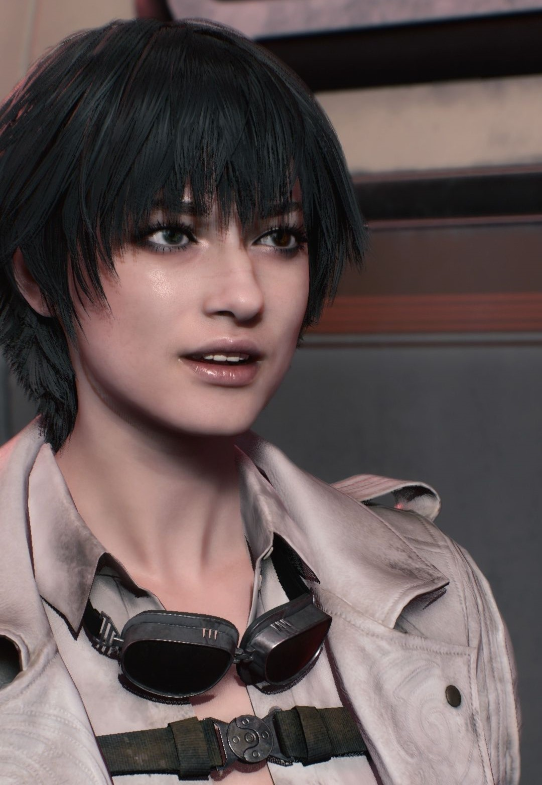
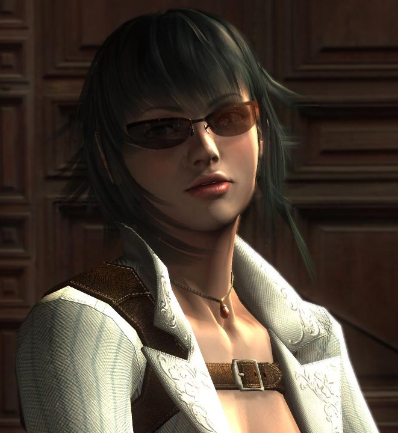
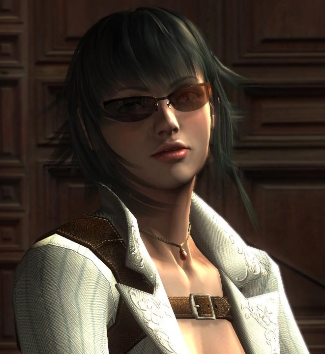
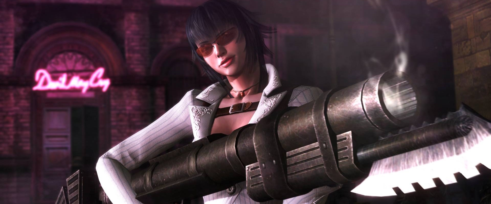

Lady
Lady é uma Devil Hunter humana que apareceu pela primeira vez em Devil May Cry 3: Dante's Awakening como personagem coadjuvante e chefe. Ela é filha de Arkham e procurou caçá-lo, encontrando Dante no processo. Após os eventos de Devil May Cry 3, ela se juntou a Devil May Cry. Ela também aparece como personagem jogável em Devil May Cry 4: Special Edition. Embora seu nome preferido, "Lady", tenha sido dado a ela por Dante, seu nome de nascimento é Mary Ann Arkham.

Em Devil May Cry 3:
Em busca de vingança, ela começa a escalar o Temen-ni-gru em busca de Arkham. Ela conhece Dante pela primeira vez logo após sua batalha com Cerberus. Ela dispara um míssil de Kalina Ann em Dante, que se esquiva do míssil e o monta nele como uma prancha de surfe voadora. Depois que o míssil abre um buraco na parede, Mary usa a nova entrada para continuar a subir a torre.
Ela luta para subir pela torre, tomando um caminho diferente do de Dante. Conforme ela se aproxima do topo, ela é confrontada por Arkham, que calmamente pergunta por que ela aponta uma arma para seus próprios parentes. Ela então afirma que a única família que tinha era sua mãe e tenta atirar nele, mas Arkham se esquiva de suas balas e a joga para fora da torre. Ela atira nele com suas pistolas ao cair, e uma bala atinge sua bochecha.
logo em seguida, Dante, em um momento diabolicamente apropriado, a pega caindo da torre pelo tornozelo. Ela exige que Dante a deixe ir, mas Dante brinca que seria um desperdício se ela acabasse sendo "apenas uma bela mancha". Ela então atira na testa de Dante, e ele a deixa cair. Ao enfiar a lâmina da Kalina Ann na parede da torre, ela consegue impedir a queda a apenas uma curta distância. Dante espia de cima ela se agarrando na torre para expressar sua indignação ao ser baleado, então ela atira nele novamente. Desta vez, Dante pega a bala em seus dentes, mas a deixa em paz. Isso a faz suspeitar de que Dante seja um demônio.
Dante continua subindo a torre, até se encontrar com Arkham e dar um tiro nele, logo após esse encontro rápido, antes de Dante sair daquela sala aonde estava ele e Arkham, Lady aparece vendo o corpo de seu pai no chão, ela pergunta a Dante se ele é o responsável. Quando Dante responde com um insatisfatório, "E daí se eu fiz?" Mary fica furiosa e atira em Dante, embora ele se esquive ou se oponha a cada tiro. Ao despejar sua raiva em Dante, ela explica os pecados de Arkham e que ele é seu pai. Ela lamenta que a morte de Arkham seja sua responsabilidade, uma vez que eles são uma família, mas no final manda Dante embora. Algum tempo depois da partida de Dante, Arkham acorda, embora ainda esteja à beira da morte. Ele diz a Mary que foi um demônio que o enganou para matar sua esposa, e coloca a culpa em Vergil. Depois de dizer isso, ele dá seu último suspiro. Mary então chora por ele e promete vingar sua "morte".
Mary então alcança Dante enquanto ele está lutando contra Vergil, e se junta ao confronto. Logo depois, Jester interrompe a batalha. Jester revela que ele é, na verdade, o alter ego de Arkham. Arkham também revela que ele atraiu Dante, Vergil e Mary para aquela câmara, afirmando que todos eles são a chave em seu plano para desbloquear o caminho para o Mundo Demoníaco. No caso de Maria, ela é descendente de uma sacerdotisa humana que Sparda sacrificou para selar o Temen-ni-gru. Jester zomba dos irmãos, dizendo que eles são fracos. Depois de bater o rosto de Mary no chão, ele esfaqueia sua coxa com a Kalina Ann para tirar seu sangue e quebrar o selo. Mary, Vergil e Dante juntos tentam acabar com Arkham, mas, uma vez que eles estão enfraquecidos por terem lutado entre si, ele facilmente os despacha e os joga para fora da plataforma em que estavam. Mary quase cai de novo quando o chão embaixo dela e os filhos de Sparda desabam, mas Dante a pega. Ela insiste que é seu trabalho parar Arkham, já que ele é seu pai, alegando "um demônio como você não entenderia" e usa o gancho no Kalina Ann para subir ao topo da torre. Dante, no entanto, não acha que ela seja páreo para Arkham e a segue por um caminho diferente.
Dante então, finalmente a alcança na Biblioteca Divina, quando Dante vai ao topo da torre para se teletransportar para o Mundo Demoníaco, Mary o para e aponta sua arma para Dante, dizendo que é sua responsabilidade parar Arkham e Dante não deve interferir. Dante insiste que é sua responsabilidade também e exige que Mary saia do caminho. Mary se recusa e eles começam uma briga. Após Dante derrotar Mary, ele comenta que toda essa confusão começou com seu pai, e ele deveria resolver isso. Mary aquiesce e confia em Dante, agora entendendo que Dante é um meio-demônio e pelo que ele está realmente lutando, ela dá a ele Kalina Ann em troca de seu nome. Algum tempo depois, Mary é mostrada tendo um vislumbre de Vergil indo para o topo da torre.
Após a aquisição do poder de Sparda por Arkham e subsequente derrota nas mãos de Dante e Vergil, Arkham volta para o mundo humano. Enquanto Arkham, enfraquecido e ensanguentado, tenta se recuperar, Mary o encontra. Com Mary apontando sua arma para ele, Arkham alega sua inocência e implora por sua vida. Maria renuncia ao seu nome e assume aquele que Dante lhe deu, "Lady". Lady então atira em seu pai quatro vezes, matando-o para sempre. Lady então chora ao lado de seu corpo.
Lady reaparece no final do jogo ao lado de Dante e conversa sobre as consequências. É aqui que ela cunhou a famosa frase 'Devil May Cry' depois de ver Dante derramando lágrimas por seu irmão. Depois disso, os demônios ainda deixados no mundo humano aparecem e atacam os dois. Lady luta ao lado de Dante. Então, a cena muda para o comentário de Lady sobre o futuro, os demônios deixados no mundo humano e sobre a loja recém-inaugurada de Dante. Por meio de suas interações com Dante, Lady percebe que os demônios são capazes do bem e do mal, assim como os humanos.
Em Devil May Cry 4:
Lady é a única responsável por envolver Dante e Trish nos eventos em Fortuna, designando-os para lá. É ela quem conta a Dante e Trish sobre a Ordem da Espada, uma pequena congregação que se reúne na cidade de Fortuna. Ela também diz que recentemente eles começaram a colecionar Devil Arms e "até mesmo se intrometeram em alguns de seus trabalhos". Ela também sugere que a Ordem pode ter algo mais para eles do que aquilo que aparenta.
Embora ela esteja presente durante o incidente de Fortuna, o paradeiro de Lady permaneceu desconhecido e provavelmente ajudou Trish a evacuar os civis de Fortuna. Depois que Sanctus e o Salvador são derrotados, Trish, Lady e Dante assistem Nero e Kyrie terem um momento romântico à distância. Quando Trish e Dante começam a sair, Lady observa que eles estão prestes a perder a melhor parte quando Dante a questiona sobre o pagamento pelo trabalho, ao que Lady garante que ele receberá seu dinheiro. Mais tarde, Lady volta à loja de Dante para pagar por seus serviços, dando-lhes um pequeno rolo de dinheiro. Trish reclama sobre este pequeno pagamento ao qual Lady argumenta que os eventos que aconteceram lá escalaram por causa das ações de Trish. O Dante aceita o pagamento pelo que recebe quando recebe uma chamada de um cliente com uma palavra-passe. Lady acompanha, apesar de Dante lhe dizer que ela não o faria.
Em Devil May Cry 5:
No início dos eventos em torno de Urizen, Lady é contatada por Morrison e acompanha Dante e Trish no trabalho, perguntando divertidamente quem é V quando ele decide deixá-las cuidar do demônio. As garotas chegam à sala do trono antes de Dante, embora não sejam páreo para a força de Urizen. Dante aparece apenas para ver as duas no chão incapazes de continuar lutando, comentando sobre como Lady e Trish são 'duas das mulheres mais durões do mundo' e engajando Urizen. Após a derrota de Dante, Urizen leva Trish e Lady embora, dizendo que servirão para lhe dar forças.
Lady, é presa em um corpo demoníaco de Artemis, é encontrada um mês depois por Nero, abrindo caminho através de Redgrave City infestada de demônios. Derrotando o demônio, Nero resgata Lady inconsciente, Nico instantaneamente reconhecendo a caçadora de demônios, já que Lady empregou os serviços de Nico no passado para manter seu armamento, principalmente o Kalina Ann, que foi perdido após a derrota de Lady nas mãos de Urizen. Os dois a levam, ainda inconsciente, para a van de Nico, este último zombando de Nero por segurar uma senhora nua em seus braços.
Mais tarde, Lady recupera o juízo, lembrando-se de Trish sendo capturada ao lado dela, mas não tendo nenhuma lembrança do destino de Dante. V comenta desajeitadamente que está feliz em vê-la tão bem, ao que Lady responde na mesma moeda, apesar de suspeitar se V é confiável. Nero responde que ele é, pelo menos, pode ser útil e vai embora, dizendo que ela deveria descansar um pouco depois de toda a provação de Artemis, com Nico acordando Lady mais tarde para pedir sua ajuda na limpeza dos escombros, para que a van pudesse passar. Mais tarde, Lady é vista junto com Nico e Nero encontrando-se com Dante, V e Trish nos níveis mais baixos da Qliphoth após o encontro de Dante com Urizen, tomando o assento do motorista navegando na van através da árvore infernal e quase atropelando Nero no processo.
Quando as Qliphoth começaram a agir violentamente como reação, Lady ficou confusa quando Dante apareceu, informando que Vergil estava de volta. Nico, apesar das objeções de Lady, 'aluga' Dante, a Kalina Ann II, uma versão modificada da arma que ela fez com base nos designs originais para Lady substituir a perdida. Enquanto o trio de garotas foge das Qliphoth na van de Nico, Nero os alcança, chateado por saber que Vergil, a razão de toda a confusão com seu braço e a árvore, é seu pai. Trish tenta convencê-lo a não matar seu próprio pai, ao que Lady, por experiência própria, acrescenta que é algo de que nunca se recupera. Nero parece impassível, pulando da van para ir e confrontar Vergil.
A cena após os créditos finais mostra Lady e Trish comendo pizza no escritório de Dante, se perguntando quando ele vai aparecer, Lady expressando seu desejo de 'se estabelecer' e reivindicar o escritório para si mesma. Morrison chega, informando que Dante deixou uma escritura para o cargo para ele, já que 'aquelas vadias malucas' vão destruir o lugar, fazendo com que Lady e Trish apontem o dedo uma para a outra e se perguntem se Dante realmente planeja voltar. Quando a energia no escritório acaba novamente, Lady e Trish seguem Morrison, que tem um novo emprego para elas.
 Lady parece ser mais jovem que Dante. Quando ela é vista pela primeira vez em Devil May Cry 3, ela usa uma roupa de colegial com uma blusa branca curta que mostra a barriga e as mangas vão até os cotovelos. A saia parece ser feita de chapa protetora e ela tem um cinto de utilidades para segurar revistas de armas, com shorts preto / roxo escuro por baixo. Conectado ao cinto está um arnês para Kalina Ann. Ela carrega uma pistola na frente de sua saia e uma submetralhadora Skorpion com uma baioneta nas costas, uma espécie de arma de arco de ação de alavanca amarrada em sua coxa esquerda e uma pistola amarrada em sua bota direita. Ela usa luvas marrom-escuras e botas marrom-alaranjadas até o joelho, com meias pretas por baixo.
Durante os eventos em Devil May Cry 4, Lady amadureceu visivelmente, crescendo um peito maior. Seu cabelo está mais longo, mas mantém o mesmo estilo geral, com o cabelo emoldurando seu rosto atingindo a clavícula. Sua roupa consiste em uma jaqueta branca com o que parece ser um arnês por baixo, sem camisa revelando seu amplo decote e umbigo. Ela também usa shorts curtos brancos e luvas vermelhas. Ela tem bolsas de revistas em cada lado de seus quadris e botas de cano alto. Ela também usa óculos escuros.
Em Devil May Cry 5, o cabelo de Lady é curto, com uma franja completa semelhante ao seu penteado Devil May Cry 3. Suas cicatrizes, principalmente em seu nariz, foram notavelmente curadas. Sua roupa principal é uma combinação de estilo militar e casual, uma jaqueta curta de couro off-white com uma blusa de mangas compridas branca que mostra sua barriga e foi complementada com óculos de cavaleiro cinza e preto e um cinto de fivela preto conectado a sua jaqueta, shorts pretos com polainas combinando que é conectado a ela shorts que lembram leggings. Ela mantém sua saia e seu armamento do terceiro jogo e usa botas pretas. Ela também usa luvas pretas sem dedos e esmalte preto / cinza.
Por um breve período após seu resgate, Lady recebe emprestado um dos macacões de mecânico brancos sobressalentes de Nico, que é um pouco grande para Lady, levando a uma aparência um tanto folgada. Ela usa as mangas arregaçadas até logo abaixo do cotovelo e as pernas da calça logo acima do tornozelo. Lady também deixa o macacão com o zíper fechado logo abaixo dos seios antes de colocá-lo em uma gola, deixando o único botão visível desabotoado. Apesar de usar a roupa de uma forma reveladora, o decote de Lady mal é enfatizado devido à falta de suporte sob o macacão folgado. Lady também recebe um par de sapatos de trabalho pretos.
Mais tarde, ela foi vista vestindo uma camisa de botão solta para se cobrir, em seguida, usando sua roupa principal durante o jogo.
Ela originalmente odiava todos os demônios, mesmo meio-demônios, e queria exterminar todos eles. Sua maior arma na época era a crença de que o que estava fazendo era certo. Isso a levou a desenvolver um preconceito moral contra os demônios, acreditando que eles eram monstros sem remorso, incapazes de entender coisas como amor ou família. Esta pode ter sido a razão pela qual ela não acreditou inicialmente na lenda de Sparda, ela pode não ter sido capaz de aceitar o fato de que um demônio é responsável pela existência continuada do mundo e da humanidade.
No entanto, com o tempo e por meio de suas experiências com Dante, ela descobre que Sparda existiu, e que humanos e demônios são iguais em sua capacidade de retidão e compaixão.
Biografia
Quando bebê, Lady foi chamada de "Mary" por seu pai, Arkham, que herdou o sangue da lendária sacerdotisa que Sparda matou para selar o Temen-ni-gru. No entanto, em algum ponto seu pai ficou obcecado com a lenda e a possibilidade de obter o poder de Sparda, e matou Kalina Ann, sua esposa e mãe de Lady. Neste momento, Lady o renegou e renunciou ao seu nome antes de se comprometer com o caminho de um Caçador de Demônios.
Em Devil May Cry 3:
Em busca de vingança, ela começa a escalar o Temen-ni-gru em busca de Arkham. Ela conhece Dante pela primeira vez logo após sua batalha com Cerberus. Ela dispara um míssil de Kalina Ann em Dante, que se esquiva do míssil e o monta nele como uma prancha de surfe voadora. Depois que o míssil abre um buraco na parede, Mary usa a nova entrada para continuar a subir a torre.
Ela luta para subir pela torre, tomando um caminho diferente do de Dante. Conforme ela se aproxima do topo, ela é confrontada por Arkham, que calmamente pergunta por que ela aponta uma arma para seus próprios parentes. Ela então afirma que a única família que tinha era sua mãe e tenta atirar nele, mas Arkham se esquiva de suas balas e a joga para fora da torre. Ela atira nele com suas pistolas ao cair, e uma bala atinge sua bochecha.
logo em seguida, Dante, em um momento diabolicamente apropriado, a pega caindo da torre pelo tornozelo. Ela exige que Dante a deixe ir, mas Dante brinca que seria um desperdício se ela acabasse sendo "apenas uma bela mancha". Ela então atira na testa de Dante, e ele a deixa cair. Ao enfiar a lâmina da Kalina Ann na parede da torre, ela consegue impedir a queda a apenas uma curta distância. Dante espia de cima ela se agarrando na torre para expressar sua indignação ao ser baleado, então ela atira nele novamente. Desta vez, Dante pega a bala em seus dentes, mas a deixa em paz. Isso a faz suspeitar de que Dante seja um demônio.
Dante continua subindo a torre, até se encontrar com Arkham e dar um tiro nele, logo após esse encontro rápido, antes de Dante sair daquela sala aonde estava ele e Arkham, Lady aparece vendo o corpo de seu pai no chão, ela pergunta a Dante se ele é o responsável. Quando Dante responde com um insatisfatório, "E daí se eu fiz?" Mary fica furiosa e atira em Dante, embora ele se esquive ou se oponha a cada tiro. Ao despejar sua raiva em Dante, ela explica os pecados de Arkham e que ele é seu pai. Ela lamenta que a morte de Arkham seja sua responsabilidade, uma vez que eles são uma família, mas no final manda Dante embora. Algum tempo depois da partida de Dante, Arkham acorda, embora ainda esteja à beira da morte. Ele diz a Mary que foi um demônio que o enganou para matar sua esposa, e coloca a culpa em Vergil. Depois de dizer isso, ele dá seu último suspiro. Mary então chora por ele e promete vingar sua "morte".
Mary então alcança Dante enquanto ele está lutando contra Vergil, e se junta ao confronto. Logo depois, Jester interrompe a batalha. Jester revela que ele é, na verdade, o alter ego de Arkham. Arkham também revela que ele atraiu Dante, Vergil e Mary para aquela câmara, afirmando que todos eles são a chave em seu plano para desbloquear o caminho para o Mundo Demoníaco. No caso de Maria, ela é descendente de uma sacerdotisa humana que Sparda sacrificou para selar o Temen-ni-gru. Jester zomba dos irmãos, dizendo que eles são fracos. Depois de bater o rosto de Mary no chão, ele esfaqueia sua coxa com a Kalina Ann para tirar seu sangue e quebrar o selo. Mary, Vergil e Dante juntos tentam acabar com Arkham, mas, uma vez que eles estão enfraquecidos por terem lutado entre si, ele facilmente os despacha e os joga para fora da plataforma em que estavam. Mary quase cai de novo quando o chão embaixo dela e os filhos de Sparda desabam, mas Dante a pega. Ela insiste que é seu trabalho parar Arkham, já que ele é seu pai, alegando "um demônio como você não entenderia" e usa o gancho no Kalina Ann para subir ao topo da torre. Dante, no entanto, não acha que ela seja páreo para Arkham e a segue por um caminho diferente.
Dante então, finalmente a alcança na Biblioteca Divina, quando Dante vai ao topo da torre para se teletransportar para o Mundo Demoníaco, Mary o para e aponta sua arma para Dante, dizendo que é sua responsabilidade parar Arkham e Dante não deve interferir. Dante insiste que é sua responsabilidade também e exige que Mary saia do caminho. Mary se recusa e eles começam uma briga. Após Dante derrotar Mary, ele comenta que toda essa confusão começou com seu pai, e ele deveria resolver isso. Mary aquiesce e confia em Dante, agora entendendo que Dante é um meio-demônio e pelo que ele está realmente lutando, ela dá a ele Kalina Ann em troca de seu nome. Algum tempo depois, Mary é mostrada tendo um vislumbre de Vergil indo para o topo da torre.
Após a aquisição do poder de Sparda por Arkham e subsequente derrota nas mãos de Dante e Vergil, Arkham volta para o mundo humano. Enquanto Arkham, enfraquecido e ensanguentado, tenta se recuperar, Mary o encontra. Com Mary apontando sua arma para ele, Arkham alega sua inocência e implora por sua vida. Maria renuncia ao seu nome e assume aquele que Dante lhe deu, "Lady". Lady então atira em seu pai quatro vezes, matando-o para sempre. Lady então chora ao lado de seu corpo.
Lady reaparece no final do jogo ao lado de Dante e conversa sobre as consequências. É aqui que ela cunhou a famosa frase 'Devil May Cry' depois de ver Dante derramando lágrimas por seu irmão. Depois disso, os demônios ainda deixados no mundo humano aparecem e atacam os dois. Lady luta ao lado de Dante. Então, a cena muda para o comentário de Lady sobre o futuro, os demônios deixados no mundo humano e sobre a loja recém-inaugurada de Dante. Por meio de suas interações com Dante, Lady percebe que os demônios são capazes do bem e do mal, assim como os humanos.
Em Devil May Cry 4:
Lady é a única responsável por envolver Dante e Trish nos eventos em Fortuna, designando-os para lá. É ela quem conta a Dante e Trish sobre a Ordem da Espada, uma pequena congregação que se reúne na cidade de Fortuna. Ela também diz que recentemente eles começaram a colecionar Devil Arms e "até mesmo se intrometeram em alguns de seus trabalhos". Ela também sugere que a Ordem pode ter algo mais para eles do que aquilo que aparenta.
Embora ela esteja presente durante o incidente de Fortuna, o paradeiro de Lady permaneceu desconhecido e provavelmente ajudou Trish a evacuar os civis de Fortuna. Depois que Sanctus e o Salvador são derrotados, Trish, Lady e Dante assistem Nero e Kyrie terem um momento romântico à distância. Quando Trish e Dante começam a sair, Lady observa que eles estão prestes a perder a melhor parte quando Dante a questiona sobre o pagamento pelo trabalho, ao que Lady garante que ele receberá seu dinheiro. Mais tarde, Lady volta à loja de Dante para pagar por seus serviços, dando-lhes um pequeno rolo de dinheiro. Trish reclama sobre este pequeno pagamento ao qual Lady argumenta que os eventos que aconteceram lá escalaram por causa das ações de Trish. O Dante aceita o pagamento pelo que recebe quando recebe uma chamada de um cliente com uma palavra-passe. Lady acompanha, apesar de Dante lhe dizer que ela não o faria.
Em Devil May Cry 5:
No início dos eventos em torno de Urizen, Lady é contatada por Morrison e acompanha Dante e Trish no trabalho, perguntando divertidamente quem é V quando ele decide deixá-las cuidar do demônio. As garotas chegam à sala do trono antes de Dante, embora não sejam páreo para a força de Urizen. Dante aparece apenas para ver as duas no chão incapazes de continuar lutando, comentando sobre como Lady e Trish são 'duas das mulheres mais durões do mundo' e engajando Urizen. Após a derrota de Dante, Urizen leva Trish e Lady embora, dizendo que servirão para lhe dar forças.
Lady, é presa em um corpo demoníaco de Artemis, é encontrada um mês depois por Nero, abrindo caminho através de Redgrave City infestada de demônios. Derrotando o demônio, Nero resgata Lady inconsciente, Nico instantaneamente reconhecendo a caçadora de demônios, já que Lady empregou os serviços de Nico no passado para manter seu armamento, principalmente o Kalina Ann, que foi perdido após a derrota de Lady nas mãos de Urizen. Os dois a levam, ainda inconsciente, para a van de Nico, este último zombando de Nero por segurar uma senhora nua em seus braços.
Mais tarde, Lady recupera o juízo, lembrando-se de Trish sendo capturada ao lado dela, mas não tendo nenhuma lembrança do destino de Dante. V comenta desajeitadamente que está feliz em vê-la tão bem, ao que Lady responde na mesma moeda, apesar de suspeitar se V é confiável. Nero responde que ele é, pelo menos, pode ser útil e vai embora, dizendo que ela deveria descansar um pouco depois de toda a provação de Artemis, com Nico acordando Lady mais tarde para pedir sua ajuda na limpeza dos escombros, para que a van pudesse passar. Mais tarde, Lady é vista junto com Nico e Nero encontrando-se com Dante, V e Trish nos níveis mais baixos da Qliphoth após o encontro de Dante com Urizen, tomando o assento do motorista navegando na van através da árvore infernal e quase atropelando Nero no processo.
Quando as Qliphoth começaram a agir violentamente como reação, Lady ficou confusa quando Dante apareceu, informando que Vergil estava de volta. Nico, apesar das objeções de Lady, 'aluga' Dante, a Kalina Ann II, uma versão modificada da arma que ela fez com base nos designs originais para Lady substituir a perdida. Enquanto o trio de garotas foge das Qliphoth na van de Nico, Nero os alcança, chateado por saber que Vergil, a razão de toda a confusão com seu braço e a árvore, é seu pai. Trish tenta convencê-lo a não matar seu próprio pai, ao que Lady, por experiência própria, acrescenta que é algo de que nunca se recupera. Nero parece impassível, pulando da van para ir e confrontar Vergil.
A cena após os créditos finais mostra Lady e Trish comendo pizza no escritório de Dante, se perguntando quando ele vai aparecer, Lady expressando seu desejo de 'se estabelecer' e reivindicar o escritório para si mesma. Morrison chega, informando que Dante deixou uma escritura para o cargo para ele, já que 'aquelas vadias malucas' vão destruir o lugar, fazendo com que Lady e Trish apontem o dedo uma para a outra e se perguntem se Dante realmente planeja voltar. Quando a energia no escritório acaba novamente, Lady e Trish seguem Morrison, que tem um novo emprego para elas.
Aparência
Lady tem cabelos escuros na altura do queixo em ambos os lados do rosto e uma franja que chega até as sobrancelhas. Ela tem muitas cicatrizes em todo o corpo, a mais proeminente sendo a do nariz. Ela também sempre tem um colar com uma gema vermelha. Como seu pai, ela tem a condição genética chamada heterocromia, que confere a cada um de seus olhos uma cor diferente: o olho esquerdo é vermelho, enquanto o direito é verde-azulado.
 Lady parece ser mais jovem que Dante. Quando ela é vista pela primeira vez em Devil May Cry 3, ela usa uma roupa de colegial com uma blusa branca curta que mostra a barriga e as mangas vão até os cotovelos. A saia parece ser feita de chapa protetora e ela tem um cinto de utilidades para segurar revistas de armas, com shorts preto / roxo escuro por baixo. Conectado ao cinto está um arnês para Kalina Ann. Ela carrega uma pistola na frente de sua saia e uma submetralhadora Skorpion com uma baioneta nas costas, uma espécie de arma de arco de ação de alavanca amarrada em sua coxa esquerda e uma pistola amarrada em sua bota direita. Ela usa luvas marrom-escuras e botas marrom-alaranjadas até o joelho, com meias pretas por baixo.
Durante os eventos em Devil May Cry 4, Lady amadureceu visivelmente, crescendo um peito maior. Seu cabelo está mais longo, mas mantém o mesmo estilo geral, com o cabelo emoldurando seu rosto atingindo a clavícula. Sua roupa consiste em uma jaqueta branca com o que parece ser um arnês por baixo, sem camisa revelando seu amplo decote e umbigo. Ela também usa shorts curtos brancos e luvas vermelhas. Ela tem bolsas de revistas em cada lado de seus quadris e botas de cano alto. Ela também usa óculos escuros.
Em Devil May Cry 5, o cabelo de Lady é curto, com uma franja completa semelhante ao seu penteado Devil May Cry 3. Suas cicatrizes, principalmente em seu nariz, foram notavelmente curadas. Sua roupa principal é uma combinação de estilo militar e casual, uma jaqueta curta de couro off-white com uma blusa de mangas compridas branca que mostra sua barriga e foi complementada com óculos de cavaleiro cinza e preto e um cinto de fivela preto conectado a sua jaqueta, shorts pretos com polainas combinando que é conectado a ela shorts que lembram leggings. Ela mantém sua saia e seu armamento do terceiro jogo e usa botas pretas. Ela também usa luvas pretas sem dedos e esmalte preto / cinza.
Por um breve período após seu resgate, Lady recebe emprestado um dos macacões de mecânico brancos sobressalentes de Nico, que é um pouco grande para Lady, levando a uma aparência um tanto folgada. Ela usa as mangas arregaçadas até logo abaixo do cotovelo e as pernas da calça logo acima do tornozelo. Lady também deixa o macacão com o zíper fechado logo abaixo dos seios antes de colocá-lo em uma gola, deixando o único botão visível desabotoado. Apesar de usar a roupa de uma forma reveladora, o decote de Lady mal é enfatizado devido à falta de suporte sob o macacão folgado. Lady também recebe um par de sapatos de trabalho pretos.
Mais tarde, ela foi vista vestindo uma camisa de botão solta para se cobrir, em seguida, usando sua roupa principal durante o jogo.
Personalidade
Lady é muito feroz, rude e forte o suficiente para acompanhar Dante. Quando Arkham finge sua morte e depois que ela o mata perto do final do jogo, Lady desaba e chora, mostrando um lado mais sentimental. Sua citação, " É verdade. Você nunca se recuperaria disso ", pode implicar que Lady mostra algum arrependimento em matar seu pai.
Ela originalmente odiava todos os demônios, mesmo meio-demônios, e queria exterminar todos eles. Sua maior arma na época era a crença de que o que estava fazendo era certo. Isso a levou a desenvolver um preconceito moral contra os demônios, acreditando que eles eram monstros sem remorso, incapazes de entender coisas como amor ou família. Esta pode ter sido a razão pela qual ela não acreditou inicialmente na lenda de Sparda, ela pode não ter sido capaz de aceitar o fato de que um demônio é responsável pela existência continuada do mundo e da humanidade.
No entanto, com o tempo e por meio de suas experiências com Dante, ela descobre que Sparda existiu, e que humanos e demônios são iguais em sua capacidade de retidão e compaixão.
